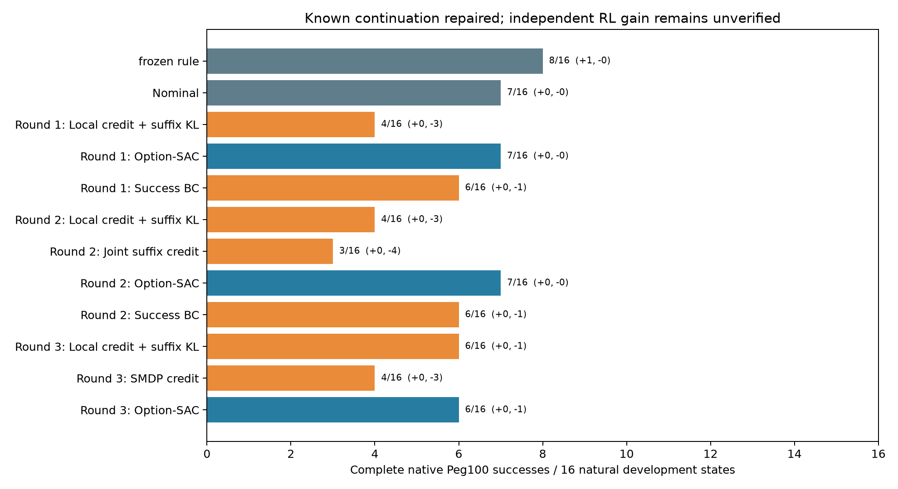
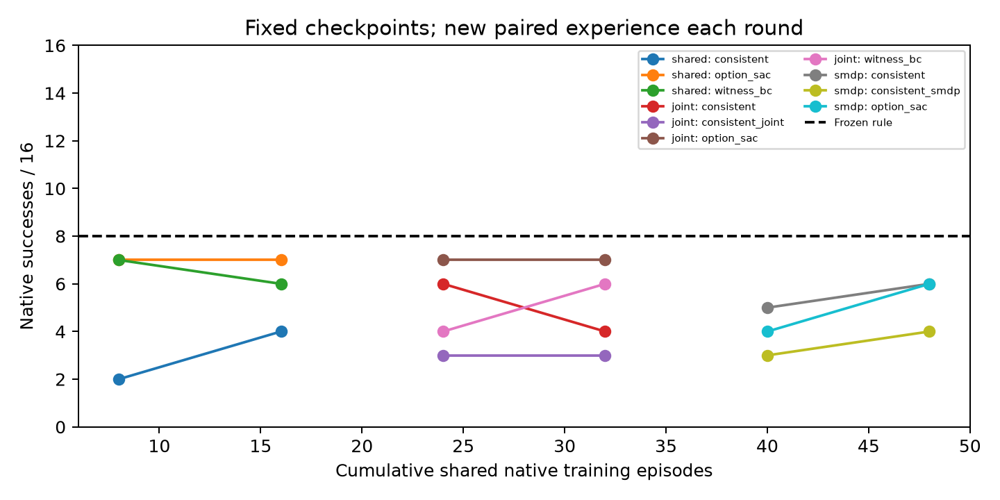

Native Peg100 · strong shared planner · real physical reexecution · no hardware
Detailed conclusions · Raw-recomputed metrics · Prior art · Reproduce · Archives / SHA
Same learned actor, seed757300. The new Option reproduces all100 measured physical steps of the earlier successful witness. This is a shared temporal-interface improvement, not a new RL claim.
16 natural development states, now seen. No sealed test or multiple neural seeds. All learned final variants have zero development rescues.


| Method / fixed checkpoint | Native success | Rescue | Regression |
|---|---|---|---|
| frozen_rule | 8/16 | 1 | 0 |
| option_parent | 7/16 | 0 | 0 |
| option_rule | 7/16 | 0 | 0 |
| primitive_sac | 7/16 | 0 | 0 |
| zero | 7/16 | 0 | 0 |
| shared_train/consistent/4 | 2/16 | 0 | 5 |
| shared_train/option_sac/4 | 7/16 | 0 | 0 |
| shared_train/witness_bc/4 | 7/16 | 0 | 0 |
| shared_train/consistent/8 | 4/16 | 0 | 3 |
| shared_train/option_sac/8 | 7/16 | 0 | 0 |
| shared_train/witness_bc/8 | 6/16 | 0 | 1 |
| joint_train/consistent/4 | 6/16 | 0 | 1 |
| joint_train/consistent_joint/4 | 3/16 | 0 | 4 |
| joint_train/option_sac/4 | 7/16 | 0 | 0 |
| joint_train/witness_bc/4 | 4/16 | 0 | 3 |
| joint_train/consistent/8 | 4/16 | 0 | 3 |
| joint_train/consistent_joint/8 | 3/16 | 0 | 4 |
| joint_train/option_sac/8 | 7/16 | 0 | 0 |
| joint_train/witness_bc/8 | 6/16 | 0 | 1 |
| smdp_train/consistent/4 | 5/16 | 0 | 2 |
| smdp_train/consistent_smdp/4 | 3/16 | 0 | 4 |
| smdp_train/option_sac/4 | 4/16 | 0 | 3 |
| smdp_train/consistent/8 | 6/16 | 0 | 1 |
| smdp_train/consistent_smdp/8 | 4/16 | 0 | 3 |
| smdp_train/option_sac/8 | 6/16 | 0 | 1 |
758002 is a selected training case. The candidate learns an actual successful correction; successful-witness BC also succeeds. This is not an independent-method advantage.
Full RAW · Synchronized physical curves
The first candidate selects action5 first in12/16 development scenes and introduces three regressions. Joint suffix likelihood and termination-consistent target revisions do not beat the frozen rule.
484 complete episodes /48,400 control steps;48 real paired training episodes;6,400 Critic and9,600 Actor iterations;90 model files. Video is measured-pose playback with0 added simulation steps. Each complete native task supplies its own official success label.
Remaining problem: state/timing generalization and reliable tail evaluation, after fixing executable continuation semantics. Front-grasp joint learning and second-task validation remain unfinished. No claim of a publishable independent method yet.
Four intermediate evaluations hit a planner Success with an empty path. A measured-current-q hold fixes the exception; one separate758204 native reexecution succeeds. No final score is rewritten, and this is not RL gain. Add1 validation episode /100steps.
Physical comparison · Preserved exceptions